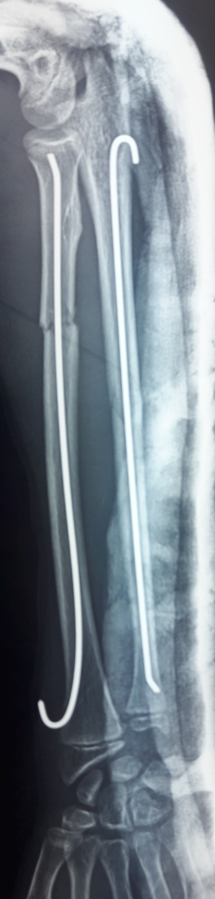
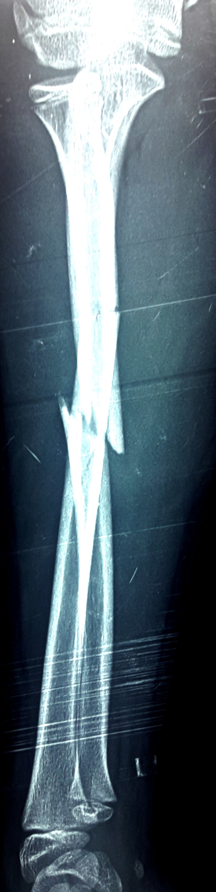
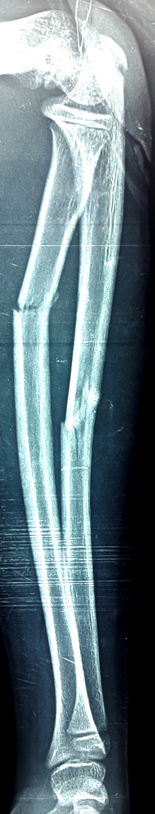

Scroll
Fracture en bois-vert déplacée de la diaphyse des deux os de l’avant-bras droit.
Réduction orthopédique avec embrochage percutané sous scope; antérograde du cubitus et rétrograde du radius. (fig3, fig4).
|  |
|
| fig3 | fig4 |
La conduite à tenir est :


Les fractures des deux os de l’avant-bras représentent 5% des fractures de l’enfant.
Elles illustrent les caractéristiques de l’os infantile. 3 types de fractures peuvent se voir:
-la fracture plastiques
-la fracture en bois-vert
-la fracture complète
Il faut distinguer entre les fractures diaphysaires qui sont particulières par leur lenteur de consolidation et leurs conséquences sur les courbures des deux os, les fractures métaphysaires et les fractures intéressant la physe et l’épiphyse avec leur risque sur la croissance.
Le traitement chirurgical est un traitement d’exeption dans les fractures des deux os de l’avant-bras.
L'embrochage percutané soit par broches de Kirschner stable ou par broches de Métaizeau. ces dernières gardent une supériorité par rapport aux précédentes, car par leur élasticité leur lontage est plus stable et aucune mobilisation ne saurait les déplacer.
Chafaqi H. Les fractures des deux os de l’avant-bras. A propos de 70 cas à l’hôpital Mohamed V d’El Jadida. Thèse Méd Casablanca 2001, 298
Ch. Lefevre et al Fracture diaphysaire des deux os de l'avant-bras chez l'adulte Encycl Méd Chir, Appareil locomoteur, 2013, 15p; 14-044-A-10.
Arras B. Traitement chirurgical des fractures des deux os de l'avant bras. These Méd Casablanca 2002, 106.
Bot A. Doornberg N. and al. Long-Term Outcomes of Fractures of Both Bones of the Forearm J Bone Joint Surg Am. 2011;93:527-32.